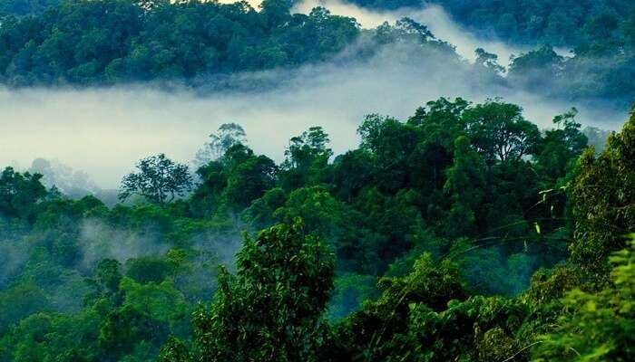

Tourism Hotspots Of Kannur
Payyambalam Beach

Payyambalam Beach makes one feel like the world has just started! It is a secluded beach that shines without any signs of human damage or spoilage. It has beautiful golden sand that sparkles like pearls under the sun. It merges foamy and white water. It won’t be a surprise if you find yourself each evening of your visit on this calm beach. This beach also lets you enter the adventure mode when you are done relaxing in its peaceful lap. Go swimming, boating, skiing, parasailing, etc. in its inviting currents.
Aralam Wildlife Sanctuary

One of the must-visit Kannur attractions,Aaralam Wildlife Sanctuary is simply unmissable for a nature lover. This forest is home to exotic species of birds and animals that turn more distinctly wondrous as you move deeper into it. If you love trekking, you can enjoy it here on its landscape that reaches a height of 1145 metres. It is one of the best wildlife sanctuaries in Kerala.
St. Angelo Fort

Situated on the coast of the mesmerising Arabian Sea, St. Angelo Fort is more than just a remarkable structure. A world heritage site, it is brimming with stories about battles to conquer it by the Portuguese and Dutch. When you are at the fort, you can enjoy a breath-taking view of the sea, natural harbour Mopilla Bay and Dharmadam Island. Inside the fort, there are beautiful, well-maintained gardens. The aura of the whole location is very relaxing. Visiting this fort is one of the best things to do in Kannur.
Arakkal Museum
Arakkal Museum is dedicated to the only Muslim royal family of Kerala, Arakkal Ali Rajas. The museum is located inside the Durbar Hall of the palace where the royal family lived and conducted gatherings with kings and nobles. Get an insight into their culture and lives through furniture, art, weapons and more displayed in the museum. Even if you are not a history buff, this place is a must visit in Kannur because of the palace. It has a majestic grandeur and elegance that immediately takes you in the past. The palace never fails to cause wide-mouthed wonder to its visitors.